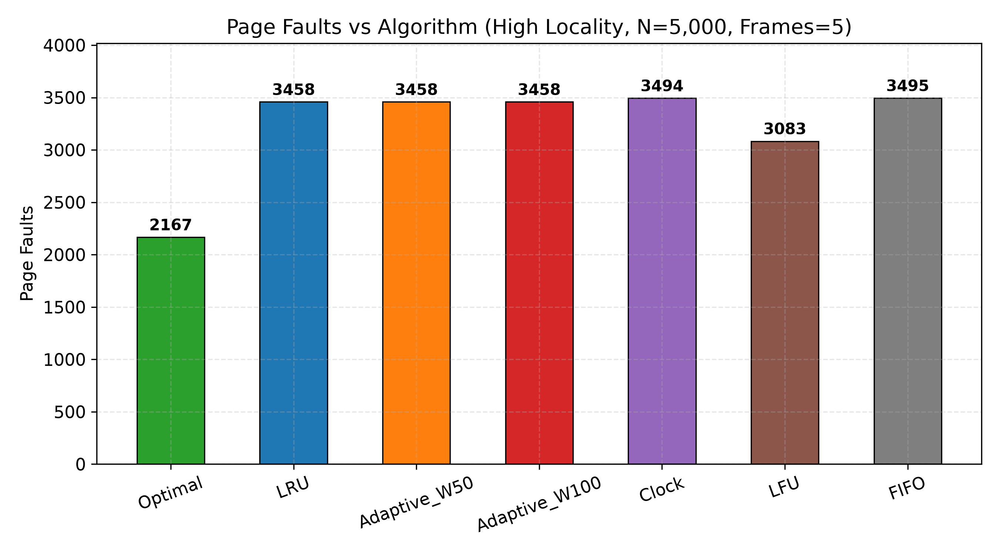
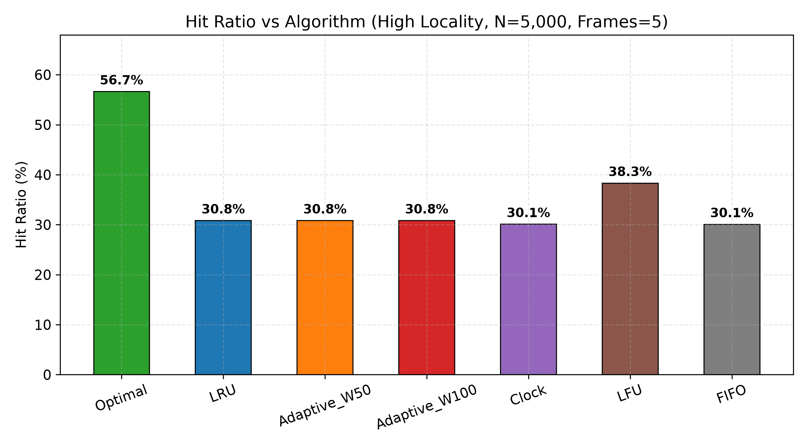
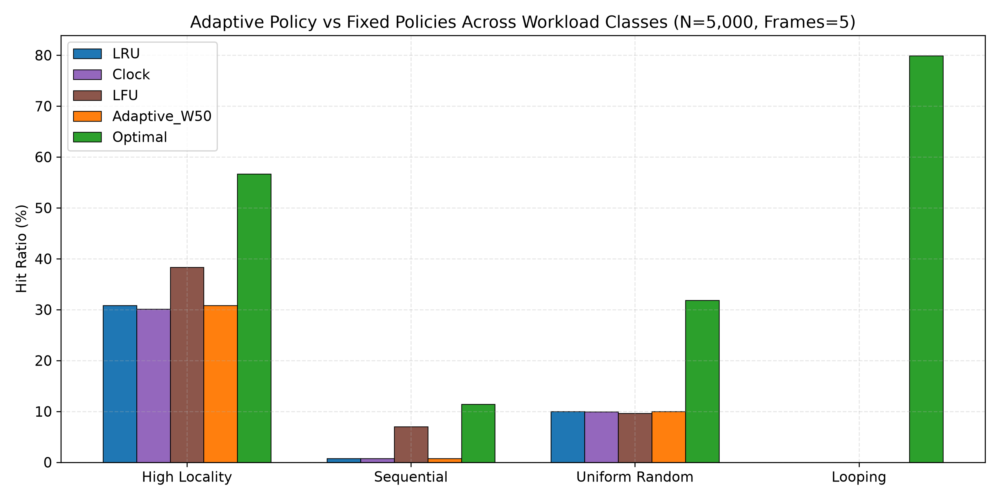
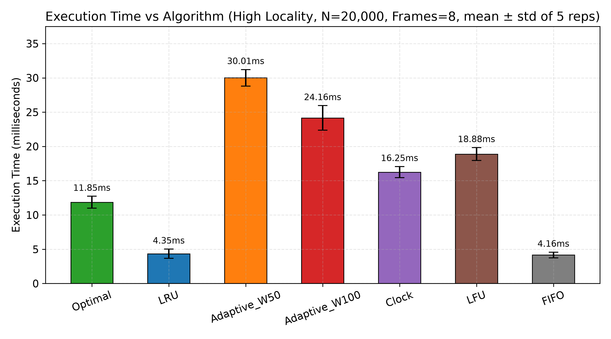
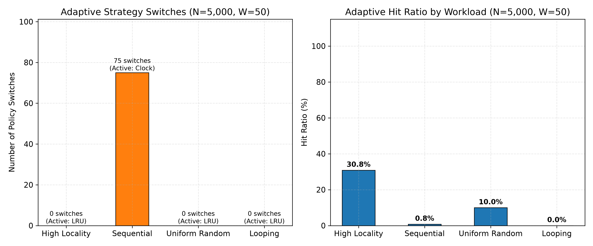
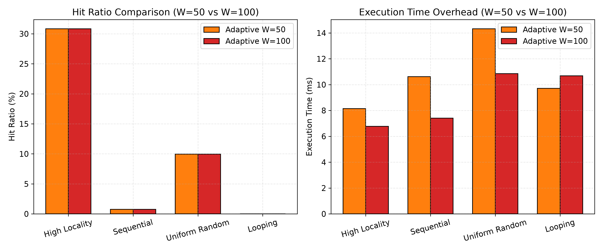
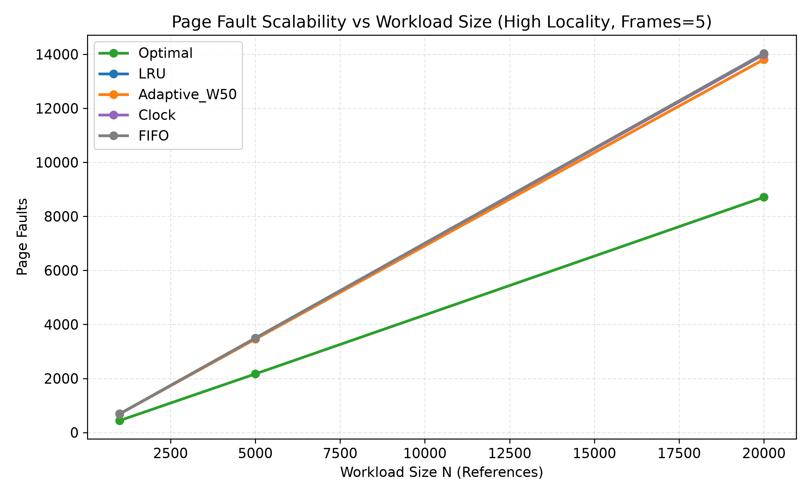
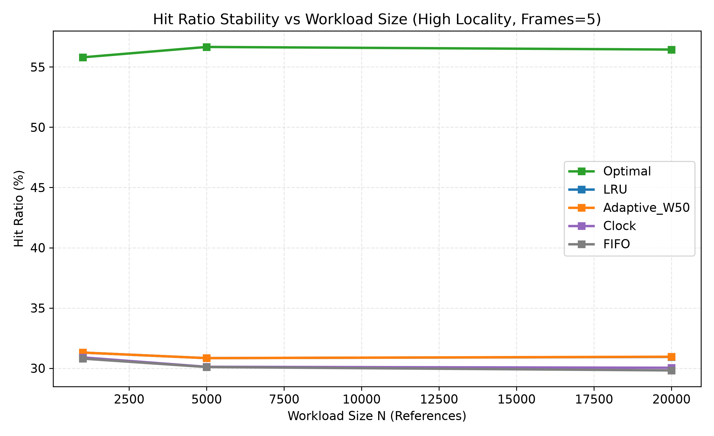
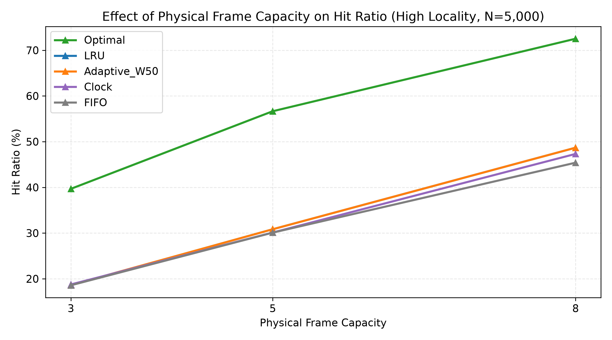

We hereby declare that this project report titled "Adaptive Page Replacement Based on Memory-Reference Locality" is an original piece of work carried out by us for the course BCSE303L – Operating Systems during the Fall Semester 2026-27. The project was designed, implemented, tested, and evaluated as part of our coursework, with all reported numerical results generated from the project's experimental implementation. No results, plots, or data have been fabricated. All numerical values presented in this report are sourced directly from the project's experimental CSV output files.
| Student 1 | 24BCE0702 – Yash Pradhan |
| Student 2 | 24BCE0714 – Anjini Pandey |
| Faculty / Guide | __________________ |
| Date | __________________ |
Virtual memory systems rely on page replacement policies to determine which resident page to evict when physical memory is saturated and a page fault occurs. Classic algorithms such as LRU, LFU, FIFO, and Clock embed fixed assumptions about program behavior and suffer systemic degradation when workload access patterns shift. This case study designs, implements, and rigorously evaluates an online, strictly causal Adaptive Page Replacement policy that dynamically detects memory-reference locality within a rolling observation window and switches between LRU, Clock, and LFU replacement heuristics without any future lookahead.
We implemented five baseline algorithms (FIFO, LRU, Optimal/Belady's MIN, Clock/Second-Chance, and LFU with FIFO tie-breaking) and two adaptive configurations (W=50 and W=100). The complete experimental evaluation comprised 1,260 raw experimental runs across 252 unique configurations: 4 workload types × 3 workload sizes × 3 frame capacities × 7 algorithm configurations, each with 5 timing repetitions.
Results demonstrate that the adaptive engine successfully detects sequential scan patterns (performing 312 total policy switches on N=20,000 sequential workloads with W=50 (156 transitions to Clock and 156 transitions back to LRU)) and preserves physical frames across policy transitions without cold-start penalties. However, the fixed heuristic thresholds were misaligned with the workload statistics: Adaptive W50 matched LRU's fault count in 30 of 36 conditions, while LFU had fewer faults than both adaptive variants in all nine high-locality configurations. At the representative N = 5,000, C = 5 condition, LFU achieved 38.34% hit ratio versus 30.84% for each adaptive configuration. We conclude that adaptive page replacement is architecturally viable but that threshold calibration is the critical determinant of practical effectiveness.
page replacement, virtual memory, operating systems, memory locality, FIFO, LRU, LFU, Clock, second chance, optimal replacement, Belady's MIN, adaptive replacement, working set, page faults, hit ratio, Belady's anomaly, sliding window, coefficient of variation
With demand paging, a process can execute while only a subset of its pages resides in physical memory frames. When a requested page is not in physical memory, a page fault occurs, requiring the operating system to load the page from secondary storage. If all physical frames are occupied, the OS must select a resident page to evict. Because secondary storage access is orders of magnitude slower than RAM access, the choice of page replacement policy is a primary determinant of system throughput and responsiveness.
Classic replacement policies embed fixed assumptions about future reference behavior: FIFO assumes old pages are obsolete, LRU assumes recent accesses predict future reuse, and LFU assumes popularity determines importance. In practice, programs exhibit dynamic phases of execution — tight iterative loops, sequential data scans, and random accesses. No single fixed assumption holds true across all phases.
The motivation for adaptive page replacement is to create a responsive OS mechanism that dynamically shifts its replacement heuristic based on the statistical properties of the currently observed reference stream. This case study explores this through rigorous simulation and statistical evaluation.
Research Question: "Can an adaptive page-replacement policy select an appropriate strategy according to observed memory-reference locality?"
Fixed page replacement policies assume monolithic program behavior, causing elevated fault rates when workloads change character. Adaptive selection aims to improve performance by matching the replacement heuristic to the current locality phase. However, dynamic selection introduces challenges: correctly identifying the workload phase using only online causal history, managing state during policy transitions, and controlling the computational overhead of metric tracking.
OrderedDict for O(1) recency tracking.Virtual memory allows processes to use logical addresses mapped to physical frames by the MMU. Demand paging loads pages only when referenced, reducing initial memory requirements. When a page fault occurs and physical memory is full, the OS invokes the page replacement algorithm to select a victim page.
Programs exhibit predictable memory access patterns: temporal locality (recently accessed pages are likely accessed again) and spatial locality (nearby pages are likely accessed soon). A third characteristic — diversity — describes the ratio of unique pages accessed in a given time window.
Denning's Working Set Model (1968) defines the working set as the set of pages referenced in a recent time window. If physical frames are fewer than the working set size, the process experiences thrashing.
For FIFO, increasing physical frames can paradoxically increase page faults. Algorithms satisfying the stack property (LRU, Optimal) are immune to this anomaly.
Evicts the page that has resided in memory the longest. Uses a deque for insertion order and a set for O(1) residency checks. Simple but ignores locality; susceptible to Belady's Anomaly.
Evicts the page whose most recent access is oldest. Uses OrderedDict with move_to_end() for O(1) recency promotion. Highly effective for temporal locality but fails on sequential scans.
Evicts the page whose next access is farthest in the future. Requires complete future knowledge — serves as an offline theoretical lower bound only.
Approximates LRU with a circular buffer and reference bits. On eviction, the hand sweeps clearing bits until finding a victim (ref_bit=0). In our implementation, the hand does NOT advance on hits, producing 14 faults on the textbook string.
Evicts the page with the lowest reference frequency. Ties are broken by FIFO arrival order (oldest arrival evicted first). Excels at protecting "hot" pages in skewed distributions.
┌─────────────────────────┐
│ Workload Generator │ ← Seed = 42, deterministic
└──────────┬──────────────┘
│ JSON traces / List[int]
▼
┌─────────────────────────────────────────────────────────┐
│ Policy Simulators │
│ FIFO │ LRU │ Optimal │ Clock │ LFU │ Adaptive(W50,100) │
└──────────┬───────────────────────────────────────────────┘
│ PageReplacementResult
▼
┌─────────────────────────┐
│ Metrics Collector │ ← Faults, Hits, Hit Ratio, Time, Switches
└──────────┬──────────────┘
▼
┌──────────────────────────┐
│ Raw CSV (1,260 rows) │
│ Summary CSV (252 rows) │
└──────────┬───────────────┘
▼
┌──────────────────────────┐
│ Statistical Analyzer │ → result_summary.txt
│ Plot Generator │ → 9 PNG plots
└──────────────────────────┘Incoming Reference
→ Rolling Window (deque, W=50 or 100)
→ Locality Metrics (U = unique/W, CV = std/mean)
→ Decision Rules (U<0.35→LRU, U≥0.85→Clock, CV≥1.0→LFU)
→ State Handover (if strategy changed)
→ Execute Replacement
→ Append to WindowCS3-Adaptive-Page-Replacement/
├── config/config.json # Parameters, thresholds, seeds
├── src/
│ ├── common.py, fifo.py, lru.py, optimal.py, clock.py, lfu.py, adaptive.py
├── workload/
│ ├── workload_generator.py # Seed=42 trace synthesizer
│ └── traces/ # 12 JSON trace files
├── experiments/
│ ├── run_validation.py, run_experiments.py, analyze_results.py
├── tests/
│ ├── test_fifo.py, test_lru.py, test_optimal.py, test_clock.py, test_lfu.py, test_adaptive.py
├── results/
│ ├── raw_results.csv (1,260 rows), summary_results.csv (252 rows)
│ ├── validation_results.csv, belady_anomaly.csv
├── plots/ # 9 PNG figures
├── report/ # Report files + setup telemetry
├── CONTRIBUTIONS.md, README.md, requirements.txt# Listing 1 — FIFO replacement logic (src/fifo.py)
queue = deque()
resident_set: Set[int] = set()
for page in reference_string:
if page in resident_set:
page_hits += 1
else:
page_faults += 1
if len(queue) == frame_capacity:
evicted_page = queue.popleft()
resident_set.remove(evicted_page)
queue.append(page)
resident_set.add(page)# Listing 2 — LRU update and eviction logic (src/lru.py)
resident_frames = OrderedDict()
for page in reference_string:
if page in resident_frames:
page_hits += 1
resident_frames.move_to_end(page) # promote to MRU
else:
page_faults += 1
if len(resident_frames) == frame_capacity:
resident_frames.popitem(last=False) # evict LRU
resident_frames[page] = True# Listing 3 — Optimal farthest-future lookahead (src/optimal.py)
for resident_page in resident_set:
occ = future_occurrences[resident_page]
if not occ:
victim_page = resident_page # never used again
break
else:
next_use = occ[0]
if next_use > farthest_idx:
farthest_idx = next_use
victim_page = resident_page# Listing 4 — Clock reference-bit handling (src/clock.py)
while True:
if frames[hand]["ref_bit"] == 0:
frames[hand] = {"page": page, "ref_bit": 1}
hand = (hand + 1) % frame_capacity
break
else:
frames[hand]["ref_bit"] = 0 # second chance
hand = (hand + 1) % frame_capacity# Listing 5 — LFU tie-breaking and eviction (src/lfu.py)
victim = min(
resident.keys(),
key=lambda p: (resident[p]["freq"], resident[p]["arrival_order"])
)
del resident[victim]
resident[page] = {"freq": 1, "arrival_order": step}A collections.deque(maxlen=W) stores the last W page references. The engine evaluates metrics every max(10, W//2) steps once the window is full.
U = |unique pages in W| / W. Low U (<0.35) → temporal locality. High U (≥0.85) → sequential scan.
CVf = σf / μf where f represents per-page frequencies within W. High CV (≥1.0) → skewed popularity.
# Listing 8 — Adaptive strategy selection (src/adaptive.py)
if u_ratio < 0.35: selected = "LRU"
elif u_ratio >= 0.85: selected = "Clock"
elif cv_f >= 1.0 and u < 0.7: selected = "LFU"
else: selected = "LRU"| Condition | Interpretation | Selected Policy |
|---|---|---|
| U < 0.35 | Strong temporal locality | LRU |
| U ≥ 0.85 | Sequential scan / high diversity | Clock |
| CV ≥ 1.0 and U < 0.70 | Skewed frequency | LFU |
| Otherwise | No strong signal | LRU (default) |
Switch to LRU: Resident pages ordered by last occurrence in history window.
Switch to LFU: Frequencies initialized from window Counter.
Switch to Clock: All ref_bits set to 1; hand reset to 0.
The decision logic runs before the current reference is appended to the window. The test_causality_future_independence unit test mutates future references and verifies identical decisions up to the mutation point.
| Workload | Generator Logic | Expected Behavior | Purpose |
|---|---|---|---|
| High Locality | 80% refs from 10 hot pages, 20% from 40 cold pages | Skewed Pareto 80/20 | Test LRU/LFU on hot sets |
| Sequential | Cyclic scan 0→49, 2% random jump | Streaming scan | Test scan resistance |
| Random | Uniform over 50 pages | Weak locality | Baseline performance |
| Looping | Fixed cycle 0,1,2,3,4,5 | Deterministic loop (size 6) | Test thrashing vs capacity |
# Listing 6 — High Locality generator (workload/workload_generator.py)
for _ in range(n):
if rng.random() < 0.8:
refs.append(rng.choice(hot_pages))
else:
refs.append(rng.choice(cold_pages))| Parameter | Values |
|---|---|
| Random Seed | 42 |
| Workload Types | High Locality, Sequential, Random, Looping |
| Workload Sizes (N) | 1,000; 5,000; 20,000 |
| Frame Capacities (C) | 3, 5, 8 |
| Algorithms | FIFO, LRU, Optimal, Clock, LFU, Adaptive W50, Adaptive W100 |
| Timing Repetitions | 5 per configuration |
| Timing Method | time.perf_counter() |
| Component | Specification |
|---|---|
| CPU | Intel Core Ultra 7 155H (16 cores / 22 threads, 3800 MHz) |
| RAM | 16 GB (15.46 GiB usable) |
| OS | Windows 11 Home Single Language, 64-bit (Build 10.0.26200) |
| Python | CPython 3.13.4 (MSC v.1943, 64-bit) |
| matplotlib | 3.11.2 |
| numpy | 2.5.3 |
Reference String: 7, 0, 1, 2, 0, 3, 0, 4, 2, 3, 0, 3, 2, 1, 2, 0, 1, 7, 0, 1
Frames: 3
| Algorithm | Faults | Hits | Hit Ratio | Expected | Status |
|---|---|---|---|---|---|
| FIFO | 15 | 5 | 25.00% | 15 | PASS |
| LRU | 12 | 8 | 40.00% | 12 | PASS |
| Optimal | 9 | 11 | 55.00% | 9 | PASS |
| Clock | 14 | 6 | 30.00% | 14 | PASS |
| LFU | 13 | 7 | 35.00% | 13 | PASS |
Clock (14) and LFU (13) values match the documented deterministic implementation semantics (hand-advance-on-fill for Clock; FIFO arrival-order tie-breaking for LFU).
29 unit tests across 6 test files. All pass: Ran 29 tests in 0.009s — OK
| Test File | Tests | Key Assertions |
|---|---|---|
| test_fifo.py | 5 | Textbook faults=15; edge cases |
| test_lru.py | 4 | Textbook faults=12; looping thrash |
| test_optimal.py | 3 | Textbook faults=9; lower-bound property |
| test_clock.py | 4 | Textbook faults=14; ref-bit semantics |
| test_lfu.py | 4 | Textbook faults=13; FIFO tie-breaking |
| test_adaptive.py | 9 | Invariants; causality future-independence; scan→Clock; locality→LRU |
| Total | 29 |
4 workloads × 3 sizes × 3 capacities × 7 policies = 252 configurations
252 × 5 repetitions = 1,260 raw experimental runs
| Workload | N | C | FIFO | LRU | Optimal | Clock | LFU | Adap. W50 | Adap. W100 |
|---|---|---|---|---|---|---|---|---|---|
| high_locality | 5,000 | 5 | 3,495 | 3,458 | 2,167 | 3,494 | 3,083 | 3,458 | 3,458 |
| high_locality | 20,000 | 5 | 14,036 | 13,812 | 8,711 | 13,992 | 12,373 | 13,809 | 13,812 |
| sequential | 5,000 | 5 | 4,964 | 4,962 | 4,431 | 4,964 | 4,650 | 4,962 | 4,962 |
| random | 5,000 | 5 | 4,505 | 4,502 | 3,409 | 4,505 | 4,519 | 4,502 | 4,502 |
| looping | 5,000 | 5 | 5,000 | 5,000 | 1,004 | 5,000 | 5,000 | 5,000 | 5,000 |
| looping | 5,000 | 8 | 6 | 6 | 6 | 6 | 6 | 6 | 6 |

| Workload | FIFO | LRU | Clock | LFU | Adap. W50 | Adap. W100 | Optimal |
|---|---|---|---|---|---|---|---|
| high_locality (N=5k, C=5) | 30.10% | 30.84% | 30.12% | 38.34% | 30.84% | 30.84% | 56.66% |
| sequential | 0.72% | 0.76% | 0.72% | 7.00% | 0.76% | 0.76% | 11.38% |
| random | 9.90% | 9.96% | 9.90% | 9.62% | 9.96% | 9.96% | 31.82% |
| looping | 0.00% | 0.00% | 0.00% | 0.00% | 0.00% | 0.00% | 79.92% |
| Algorithm | Mean Hit Ratio | Mean Time (ms) |
|---|---|---|
| Optimal | 43.34% | 8.082 |
| LFU | 22.87% | 15.816 |
| LRU | 19.45% | 3.507 |
| Adaptive W50 | 19.46% | 18.971 |
| Adaptive W100 | 19.45% | 16.122 |
| Clock | 19.26% | 9.219 |
| FIFO | 19.10% | 2.392 |


| N | FIFO | LRU | Optimal | Clock | LFU | Adap. W50 | Adap. W100 |
|---|---|---|---|---|---|---|---|
| 1,000 | 0.27 | 0.48 | 1.00 | 1.12 | 1.99 | 2.29 | 1.79 |
| 5,000 | 1.30 | 2.02 | 4.60 | 5.30 | 8.87 | 10.81 | 9.03 |
| 20,000 | 5.61 | 8.02 | 18.65 | 21.23 | 36.58 | 43.82 | 37.55 |
Adaptive W50 = 5.4× LRU. Adaptive W100 = 4.6× LRU. FIFO is fastest. Execution time increased approximately linearly with N over the tested sizes; this is an empirical observation rather than a formal asymptotic proof.

| Workload | W=50 Switches | W=50 Final | W=100 Switches | W=100 Final |
|---|---|---|---|---|
| High Locality (N=20k, C=5) | 2 | LRU | 0 | LRU |
| Sequential (N=20k, C=5) | 312 | LRU | 0 | LRU |
| Random (N=20k, C=5) | 0 | LRU | 0 | LRU |
| Looping (N=20k, C=5) | 0 | LRU | 0 | LRU |
Why W=100 never switches: With 50 unique pages, U_max = 50/100 = 0.50. The scan threshold (0.85) is mathematically unreachable. For the high-locality workload, the U < 0.35 locality condition is evaluated before the LFU condition, so LRU is selected whenever the window is classified as strongly local; therefore, a high CV value cannot trigger LFU while that locality rule is satisfied. Result: Adaptive W100 selected LRU across all 36 W100 configurations (180 timing repetitions).
Adaptive W50 vs LRU: Identical faults in 30/36 conditions; fewer faults in 6 conditions (max reduction: 6 faults); never worse.


Classic demonstration: FIFO on 1, 2, 3, 4, 1, 2, 5, 1, 2, 3, 4, 5
| Frames | FIFO Faults | Hit Ratio |
|---|---|---|
| 3 | 9 | 25.00% |
| 4 | 10 | 16.67% |
4 frames → MORE faults (10) than 3 frames (9). Anomaly confirmed. No anomaly observed in any of the four synthetic N=1,000 workloads across frames 3–8.
Fault counts are perfectly deterministic: Standard deviation = 0 across all 5 repetitions for all 252 configurations. No race conditions.
Execution-time variance is low: Generally under 2 ms std dev even for N=20,000.
No formal hypothesis tests were performed because fault counts have zero variance across repetitions.
LFU dominates high-locality: 38.34% vs LRU's 30.84% (N=5k, C=5). Frequency counting protects Pareto hot pages effectively.
LRU beats LFU on random: 9.96% vs 9.62%. Under uniform access, no "hot" pages exist to protect.
Adaptive matches LRU: The decision logic checks U < 0.35 before evaluating the LFU CV condition, so strongly local windows select LRU before the frequency-skew signal can trigger LFU. This is the most significant missed opportunity in the current rule ordering.
LFU is among the winners most often: With ties counted for every policy sharing the minimum, LFU is tied for the minimum fault count in 30/36 configurations. The corresponding counts are FIFO 14/36, LRU 14/36, Adaptive W50 14/36, Adaptive W100 14/36, and Clock 11/36.
| Area | 24BCE0702 – Yash Pradhan | 24BCE0714 – Anjini Pandey |
|---|---|---|
| Algorithms | FIFO, LRU, Optimal | Clock, LFU, Adaptive |
| Testing | FIFO/LRU/Optimal tests | Clock/LFU/Adaptive tests; causality test |
| Workloads | Workload generator | — |
| Experiments | — | Batch runner; Belady scan; analysis; 9 plots |
| Adaptive Design | — | Engine architecture; metrics; state handover |
# Python 3.10+ required
pip install -r requirements.txt
# Step 1: Unit tests (29 tests)
python -m unittest discover -s tests -v
# Step 2: Textbook validation
python experiments/run_validation.py
# Step 3: Generate workload traces
python workload/workload_generator.py
# Step 4: Full experiment matrix (1,260 runs)
python experiments/run_experiments.py
# Step 5: Analysis and plots
python experiments/analyze_results.pyThis case study empirically evaluates whether an adaptive page-replacement policy can select appropriate strategies according to observed memory-reference locality.
What was implemented: Five classic algorithms and a novel online, causal adaptive engine using U and CV metrics with non-destructive state handover.
What experiments showed: The adaptive engine detects scan patterns and performed 312 total policy switches on the N = 20,000 sequential workload with W = 50, consisting of 156 transitions to Clock and 156 transitions back to LRU. It matches LRU in 30/36 conditions (W50) and 36/36 (W100).
Where fixed policies are stronger: LFU has fewer faults than both Adaptive variants in all nine high-locality configurations. At the representative N = 5,000, C = 5 condition, LFU achieved a 38.34% hit ratio versus 30.84% for each adaptive configuration.
Overall: Adaptive page replacement is architecturally viable — causality is maintained, state handover works — but threshold calibration is the critical determinant of practical effectiveness. The answer to the research question is yes, with nuance: adaptive policies can select strategies according to locality, but do not necessarily outperform well-chosen fixed policies without precise threshold tuning.



End of Report — Generated October 2026